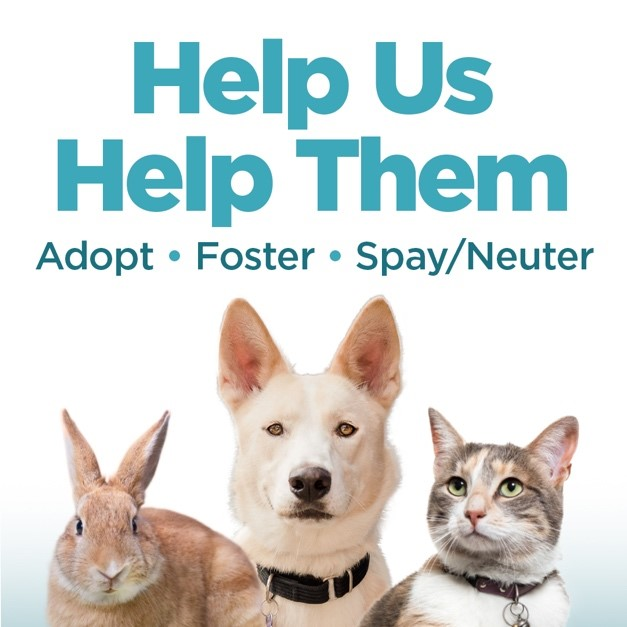
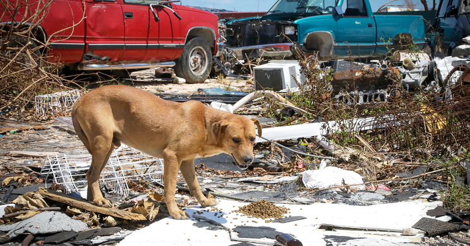
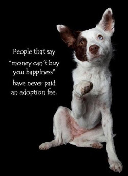
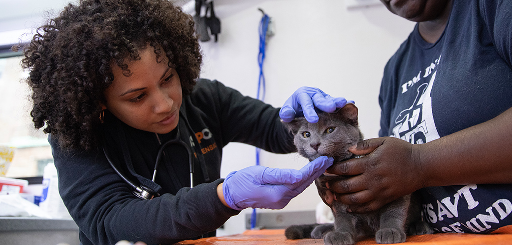
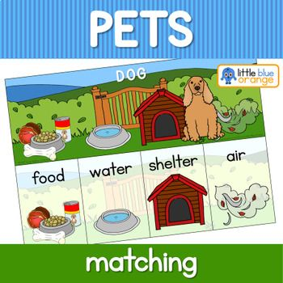
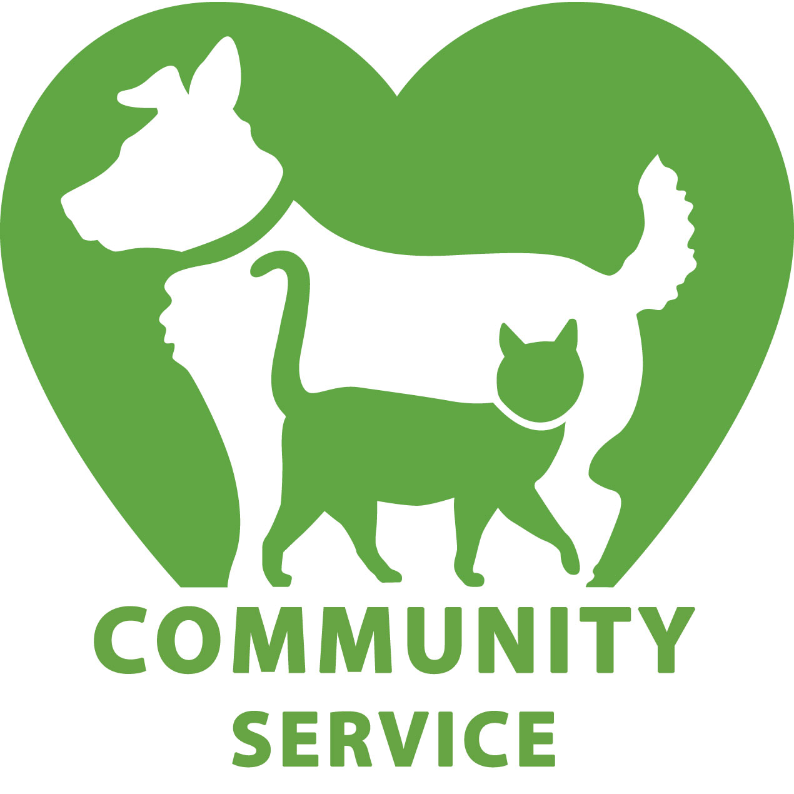
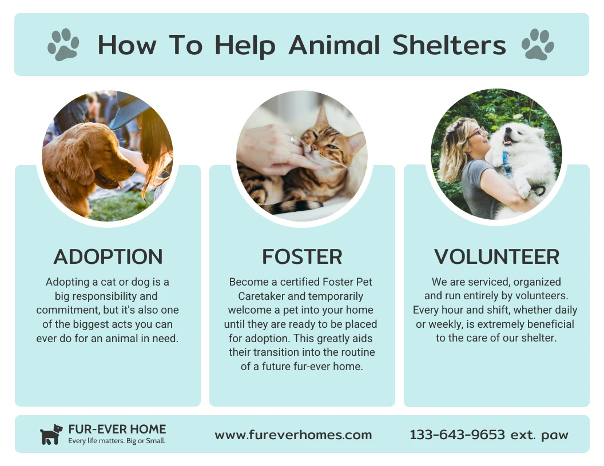

Animal Lifeline

Hope. Healing. A second Chance. That's what Animal Lifeline is about!
Welcome to Animal Lifeline!!
Since 1897, The Durban & Coast Animal Lifeline has worked hand in hand with SPCA, which is a non profit oraganization has been a voice for the voiceless animal in need.
We are dedicated to rescuing, protecting, and caring for all types of animals in need.
We are one of South Africa's oldest and most trusted animal welfare organizations, and our mission is to prevent cruelty, promote adoption,
and provide shelter and veterinary care for thousands of animals every year.

What We Do?
- Animal Rescue: Responding to cases of neglect, abuse, or abandonment.
With compassion at the heart of everything we do, our mission is to provide a safe haven for abandoned, abused, and neglected animals while working tirelessly to find them loving, forever homes.

- Adoptions: Finding safe and loving forever homes for animals.
Through our adoption program, we connect rescued cats, dogs, and other pets with caring families ready to open their hearts and homes. Every adoption not only transforms the life of a pet in need but also brings unconditional love, joy, and companionship to their new family. Choose adoption—save a life and gain a loyal friend for life.

- Veterinary Care: Animal Lifeline Veterinary Care provides compassionate, professional medical services to ensure the health and well-being of animals in need.
From routine check-ups and vaccinations to emergency treatments and surgeries, our dedicated team of veterinarians and caregivers work tirelessly to give every pet the chance at a healthier, happier life.

- Shelter: Animal Lifeline Shelters provide a safe haven for abandoned, abused, and neglected animals, offering them love, care, and medical attention.
These shelters work tirelessly to rescue and rehabilitate pets in need, ensuring they are given a second chance at life.

- Education: Animal Lifeline Education aims to create awareness and understanding about animal welfare, responsible pet ownership, and compassion for all living beings.
Through workshops, school visits, and community outreach programs, the initiative teaches people—especially children—the importance of kindness, proper animal care, and the role we all play in protecting animals.
By educating communities, Animal Lifeline builds a foundation of empathy and responsibility that ensures a safer, healthier future for animals and people alike.

- Community Outreach: Animal Lifeline's community outreach program is dedicated to promoting compassion, responsible pet ownership, and animal welfare within local communities.
Through educational workshops, adoption drives, vaccination campaigns, and support services, we connect with families and individuals to ensure pets receive the care they deserve.

How You Can Help?
Every person can make a difference. Here's how you can support us:
- Adopt a pet and give them a forever home.
- Volunteer your time to help in our shelter and outreach programs.
- Donate funds or supplies to support our daily operations.
- Attend our events to raise awareness and show your support.
Stay Connected!
Follow us on Facebook and Instagram
for real-time updates, inspiring adoption stories, and upcoming events. Join our community and be part of the movement to create a kinder world for animals.
Why It Matters?
By supporting the Animal Lifeline and the SPCA, you play a vital role in safeguarding animal welfare, preventing cruelty, and promoting a compassionate community.
Your contribution ensures that every animal has the opportunity to live with care, dignity, and respect
Join us in creating a kinder, safer world for animals — together, we save lives.
